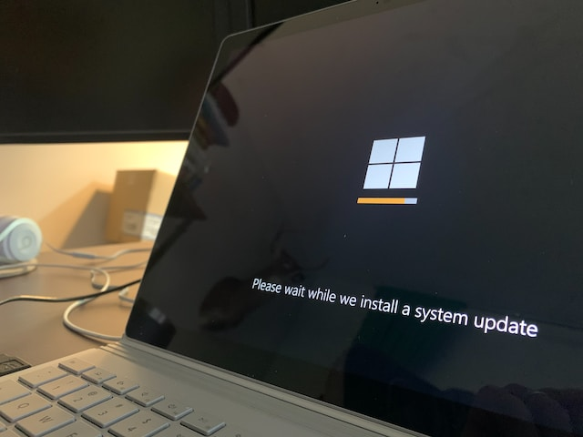
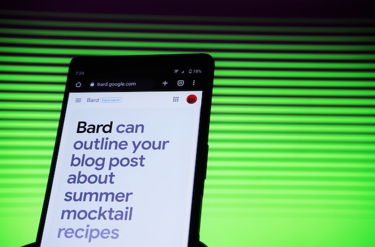
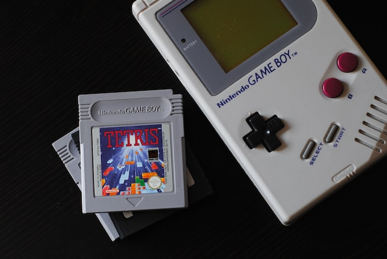

Novedades

Adiós a Windows 10: no tendrá más actualizaciones ni soporte desde octubre de 2025
La versión actual de Windows 10 será la última que tenga este sistema operativo que ya ha cumplido sus 10 años. Los usuarios que sigan queriendo acceder a actualizaciones y soporte deberán actualizar su sistema operativo a Windows 11.
Leer más

ChatGTP vs Bard, la IA lanzada por Google para competir con Microsoft
ChatGTP apareció en el mercado en noviembre del año pasado de la mano de la compañía OpenIA y respaldado por Microsoft. Ahora, meses después, Google ha lanzado su sombrero al ring con su propia IA que ha sido bautizada Bard.
Leer más

ChatGTP y sus efectos en cómo buscamos empleo
La inteligencia artificial está teniendo un efecto masivo en cómo se busca trabajo y en los procesos de contratación ya que ChatGTP ha puesto a disposición de gente que no dispone de habilidades de escritura la capacidad de escribir convincentemente mails a recluiters, curriculums y cartas de..
Leer más
Esta herramienta argentina convierte transcribe los audios en texto
Los audios de WhatsApp suelen ser comodísimos para quién los envía pero pueden ser bien molestos para el que los recibe. Para evitar esto llega al mercado TranscribeMe, una herramienta desarrollada en Argentina que tiene el foco puesto en el...
Leer más
Explorando la Tierra Media con un mapa interactivo
Los fanáticos de “El Señor de los Anillos” sabrán que J.R.R Tolkien no escribió algunos libros solamente sino que desarrolló un mundo entero con historias que abarcan miles y miles de años de luchas, razas y familias. Ahora, el LOTR Project, pone a disposición de los fans un mapa interactivo que permite...
Leer más
La Universidad de la Plata conquistará el espacio con su propio nanosatélite
Cuando pensamos en satélites solemos pensar en grandes estructuras que pesan toneladas pero la Facultad de Ingeniería de la UNLP tiene otra cosa en mente. Este nanosatélite es el primero de su tipo, tendrá el tamaño de un paquete de pan...
Leer más
Las empresas de telecomunicaciones deberán aumentar su inversión anual un 40% si quieren 5G
La mesa de discusión sobre 5G en Argentina, conformada por los operadores de comunicaciones móviles y los funcionarios del Ente Nacional de Comunicaciones no ha llegado a ningún acuerdo y es por ello que la licitación del espectro para esta...
Leer más

Las empresas están volviendo a las vallas publicitarias para promocionarse
Las publicidades en los sitios web tienen ventajas innegables. La principal de ellas es que permiten una segmentación del público extremadamente específica así, las personas que ven el anuncio tienen una alta posibilidad de estar interesados en el mismo
Leer más
¿Qué son las VPN, para qué se usan y cuáles son sus riesgos?
Cuánto más usamos la tecnología, más importante se vuelve proteger nuestra seguridad y privacidad frente a la plétora de amenazas informáticas que existen. Una de las herramientas más populares para lograrlo son las VPN, ya que permiten una...
Leer más

Tetris: un invento ruso amado alrededor del planeta
Los gráficos son simples y las reglas son claras: hay que rotar una ficha de rompecabezas que va cayendo rápidamente por la pantalla. Cuando se forman líneas horizontales completas las mismas desaparecen, repetir ad infinitum. “Tetris” fue un juego sumamente popular alrededor del mundo en los 80 y 90 y...
Leer más
¡Por fin! WhatsApp es ahora multidispositivo
Hasta ahora, una misma cuenta de WhatsApp podía ser utilizada en celular, computadora y tablet, pero no en otro teléfono. Esto, para felicidad de muchísimos usuarios, está en proceso de cambio ya que ahora se podrá acceder a la misma cuenta con hasta cuatro móviles.
Leer más

Sheroes in Games, una propuesta para acercar a las mujeres al desarrollo de videojuegos
El proyecto, organizado por el Goethe Institut, el ministerio de Relaciones Exteriores de Alemania y apoyado por la Universidad Nacional de Quilmes, busca reducir la becha de género en la industria de los videojuegos y crear los mismos con una...
Leer más